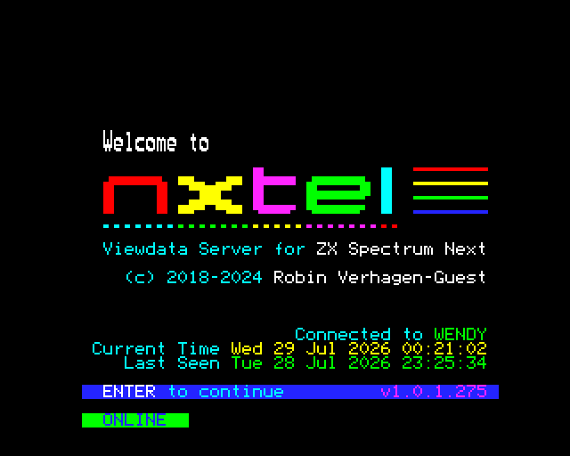

5.6 Networking¶
A real ZX Spectrum Next has a header for an ESP-01 WiFi module, and the
software written for it — NXtel, nextsync, the NextZXOS .HTTP and .zxdb-dl
dot commands — talks to that module over a serial link. JNEXT emulates one, so
those programs can reach the network through your host machine.
There is no WiFi to configure. The emulated module reports itself as already associated with an access point, because to the guest program that is what a working ESP-01 looks like; the actual connections are made by your host.
It is off by default, and it stays off until you say otherwise¶
Turning this on gives the running program an outbound TCP pipe out of the emulator. That program can already read and write the SD-card image. A program you did not write is a program you are trusting.
So JNEXT never enables it for you, and no loaded program can enable it for itself. You turn it on in one of two places:
- for one run,
--espon the command line; - permanently, Settings > Preferences > Network.
--no-esp forces it off for a single run, whatever the saved setting says.
That is the escape hatch that makes the permanent setting safe to have: if you
have the ESP on by default and want to run something you do not trust, start it
with --no-esp.
The setting is stored in ~/.jnext/jnext.conf under [esp], and it is the one
Preferences setting that cannot be applied to a machine that is already
running — the module is built when a machine starts. Change it and it takes
effect on the next Machine > Power Reset (or F1), or the next launch. You
do not have to quit JNEXT.
You can always see whether it is on¶
Whenever the module is enabled, the status bar grows an ESP cell. However
you turned it on — command line, config file or Preferences — the cell is
there. (In --headless runs there is no window and so no status bar; the
startup log line is the equivalent, and 7.1
covers that mode.)
Idle, it names the restriction in force, so you can tell at a glance whether your allowlist actually loaded:
ESP: on (any host) no restriction on the host name
ESP: on (2 allowed) two named hosts, listed in the tooltip
Once the program starts connecting, the cell follows it:
| Cell | Means |
|---|---|
ESP: host:port |
connected |
ESP: closed host:port |
that connection has ended |
ESP: failed host:port |
the attempt did not succeed — see below |
ESP: REFUSED host:port |
red. JNEXT blocked it: either your --esp-allow list does not name that host, or the address is on the always-refused list below |
ESP: FAULT |
red. The host side broke; the ESP has stopped making progress |
Red REFUSED means JNEXT said no, and it covers both halves of that
decision. failed means the network said no: the name did not resolve, the
remote end refused the connection, or the attempt timed out. Hover the cell
either way — the tooltip carries the reason, and a block by the always-refused
list says so in as many words (address refused by policy: …). The log also
carries it, as a warning, at the default log level.
Hover the cell for the full history of the session — the cell can only show the most recent event, and "it flashed something a minute ago" needs to stay answerable.
A worked example: NXtel¶
NXtel is a Viewdata/teletext client for the Next, and it is the program this has been verified against end to end, over the live internet.
It ships on the NextZXOS SD-card image, and it has to be launched from
NextZXOS — loading NXtel.nex directly with --load gives you a black
screen, and that is not an ESP problem (it does the same with the ESP off).
Start JNEXT with the ESP on, restricted to the BBS:
jnext --esp --esp-allow nx.nxtel.org
Then, in the emulated machine: Browser from the NextZXOS menu, into
APPS, then WIFI, then NXtel, and run NXtel.nex. Choose Connect, and
pick the NXtel (Wendy) entry.

Connected to WENDY and a green ONLINE mean the whole chain worked: the
program, the emulated module, your host's network, and the real server.
Two things surprise people the first time:
- NXtel writes a
NXtel.cfgfile next to itself on first run and opens it in an editor. That looks like a failure and is not — it is the config being created. Carry on. - The SD-card image is written to. If you need the run to be reproducible, give it a copy of the image rather than your master.
Restricting which hosts a program may reach¶
--esp-allow HOST narrows the program to hosts you name. Give the option once
per host — it is not a list:
jnext --esp --esp-allow nx.nxtel.org --esp-allow 192.168.1.10
A comma is rejected rather than accepted, because --esp-allow a.com,b.com
would otherwise become a single host name that nothing ever matches: every
connection refused, while the allowlist looks like it names two hosts.
--esp-allow without --esp is likewise an error rather than a silent no-op,
so you cannot end up believing a restriction is in force when the module is not
even on.
In Preferences > Network the same list is one host per line (a comma separates there too, since that is how the config file writes it). Blank lines and repeats are dropped. The box is greyed out while the module is off, because on its own it restricts nothing.
Matching is exact and case-insensitive. There are no wildcards, and an IP address must be listed as itself — a deliberately small rule for a security control, and enough for the programs that exist: they connect to a handful of literal names from their own config.
With no --esp-allow at all, the program may name any host. An empty list
means "no restriction", not "deny everything" — otherwise --esp on its own
would do nothing and the module would just look broken. The startup log and the
status cell both say which of the two you are in.
What is refused no matter what you allow¶
These are judged by the address a name actually resolves to, before any
connection is attempted, and --esp-allow cannot re-enable them:
- loopback —
127.0.0.0/8and::1: daemons on your own machine; - link-local —
169.254.0.0/16andfe80::/10; - cloud metadata endpoints —
169.254.169.254,100.100.100.200andfd00:ec2::254; - the unspecified addresses
0.0.0.0/8and::; - multicast and reserved space —
224.0.0.0/4,240.0.0.0/4,255.255.255.255,ff00::/8.
IPv6 spellings of an IPv4 address (::ffff:127.0.0.1, NAT64, 6to4) are resolved
to what they really reach and judged on that, so they cannot be used to slip
past the list.
Your own LAN is reachable on purpose. Private addresses (192.168.x.x,
10.x.x.x, 172.16-31.x.x, and likewise carrier-grade NAT 100.64.0.0/10 and
IPv6 unique-local fc00::/7) are not refused — reaching another machine on
your own network is the main thing people use this for, and nextsync in
particular connects to a PC on the LAN. The two cloud-metadata addresses above
sit inside those ranges and are carved back out.
Worked example: NextSync¶
NextSync is the file-transfer tool most Next developers use to get a build onto
the machine, and it is the one case where the loopback rule above changes what
you have to type. Its server runs on your PC; the .sync dot command on the Next
connects out to it.
Run the server bound to your machine's LAN address, not 127.0.0.1. The
server script binds every interface already, so this is only about which address
you give the Next:
python3 nextsync.py -a
Then, once, on the Next — with your host's real LAN address, which the server prints when it starts:
.sync 192.168.100.238
and from then on just .sync (or .syncfast / .syncslow). Nothing else is
needed: --esp alone is enough, because private addresses are allowed by default
and an empty allowlist means "no restriction".
jnext --esp --machine next
Pointing it at 127.0.0.1 is the one thing that will not work — the connection
is refused before it is attempted, and the log says
address refused by policy. All three speed variants are verified working, and
the files arrive byte-identical.
Nothing about your host leaks into the program¶
The module reports a fixed, invented identity: SSID JNextWifiHost, a
02:00:00:… MAC and BSSID, and a 192.168.1.50 station address. None of it is
read from your machine, so a program cannot learn your real SSID, MAC or local
addresses by asking. The emulated module is not a radio and never scans.
When something does not work¶
Turn up the module's own log and watch what the program is actually saying:
jnext --esp --log-level esp01=debug
| Level | What you get |
|---|---|
info (default) |
the module coming up, and every connection opened, refused, failed or closed |
debug |
every AT command the program sends and every reply |
trace |
the raw bytes in both directions |
--log-level esp01=off silences the connection reports as well. That is your
call to make and JNEXT will not override it — in a window the status-bar cell
stays regardless, so the run is still not silent there. Headless, with the log
off, nothing reports the connections at all.
Common cases:
- The cell shows red
REFUSED. JNEXT blocked it. Hover it: if the reason isnot in the allowlist, check your--esp-allowspelling against the name the log shows the program asking for, or drop the restriction to confirm that is what it is. If it isaddress refused by policy, the program asked for something on the always-refused list and no--esp-allowwill let it through. - The cell shows
failed. That is an ordinary network failure — wrong name, nothing listening, timeout. Hover it for the reason. - The program behaves as if nothing is there. In a window, check the cell
exists at all; headless, check the startup log for the
ESP-01 enabledline. If it is absent the ESP is off —--no-espbeats a saved preference, and a changed[esp]setting only takes effect after a Power Reset. - Nothing at all happens and the program hangs. Run it once with
--no-esp. If it behaves the same way, the problem is not the networking.
What is not emulated yet¶
The command set is the one evidenced in software that actually runs on a Next, so a few things a physical ESP-01 can do are not built:
- server / listen mode (
AT+CIPSERVER) — so nothing can connect in; - UDP, multiplexed connections and transparent mode.
None of them has a consumer in current Next software. Widening the emulation to the full ESP-01 firmware specification is tracked as issue #154.